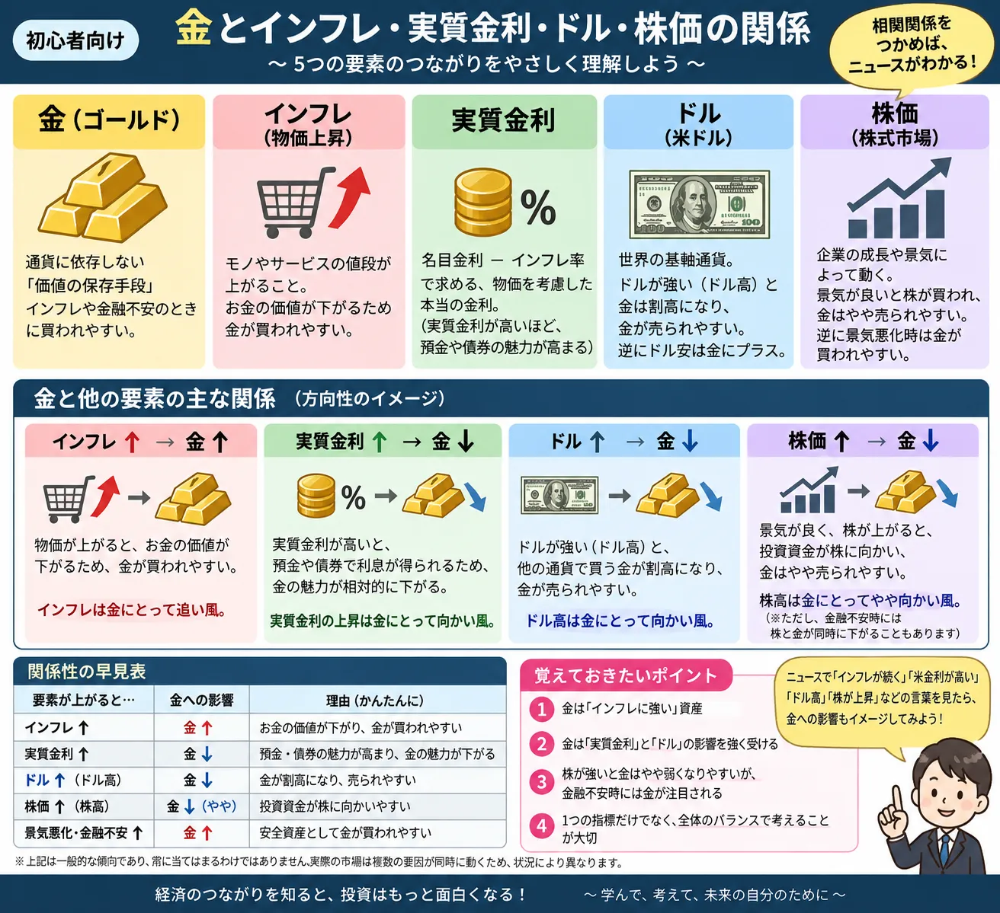

話題・トレンド
金（ゴールド）とは？なぜインフレや金利で価格が動くの？初心者向けに解説
金（ゴールド）は、株式や債券と並んで金融ニュースで頻繁に登場する資産です。 「安全資産」「インフレに強い」と表現されることがありますが、 金価格はインフレだけで決まるわけではありません。 金利、実質金利、ドル相場、為替、地政学リスクなど、さまざまな要因が関係しています。
この記事のポイント
金価格を見るときは「インフレ」だけでなく金利・ドル・為替をセットで考える
- 金は利息や配当を生まない資産
- 実質金利が重要な材料になりやすい
- 国際金価格は主に米ドル建て
- 日本ではドル円も価格へ影響する
- 安全資産でも価格下落はある
Overview
金価格を動かす主な要因を整理

Basics
金（ゴールド）とは？
金は古くから装飾品、貨幣、資産などとして利用されてきた貴金属です。 現在では宝飾品や工業用途のほか、投資対象や中央銀行の準備資産としても保有されています。
特徴 01
世界で価値が認識されている
金は特定の国だけで利用される資産ではなく、世界各地で売買されています。 国際的な市場が存在し、金融市場でも重要な商品として扱われています。
特徴 02
供給量に限りがある
金は企業が自由に大量発行できるものではありません。 採掘には時間とコストが必要で、供給量には物理的な制約があります。
特徴 03
利息や配当は生まない
株式の配当や債券の利息のような定期的な収益は、金そのものからは発生しません。 この特徴が金利との関係を考えるうえで重要です。
- 投資
- 宝飾品
- 工業用途
- 中央銀行の準備資産
- 資産保全
Safe Haven
なぜ金は「安全資産」と呼ばれるの？
金は金融ニュースで「安全資産」と表現されることがあります。 これは価格が絶対に下がらないという意味ではありません。 市場不安が強まった際に、資金の逃避先として選ばれることがあるという意味で使われます。
特定企業の信用に依存しない
株式は企業の経営状態に影響されますが、金そのものには企業の倒産という考え方がありません。
世界的に取引されている
金は世界各地で取引されており、地域を越えて価値が認識されやすい資産です。
実物資産である
金は物理的に存在する資産であり、通貨や企業の信用とは異なる特徴を持っています。
注意
「安全資産＝値下がりしない」ではない
金価格にも大きな上昇・下落があります。 市場が混乱した場面でも、換金目的の売りなどによって株式と金が同時に下落することがあります。 「安全資産」という言葉だけを見て元本保証のように考えないことが重要です。
Price Factors
金価格は何で動くの？
金価格は一つの材料だけで決まるものではありません。 とくに金融市場では、インフレ、金利、実質金利、米ドル、景気、地政学リスクなどが注目されます。
インフレ
通貨の購買力低下が意識されると、実物資産である金への関心が高まる場合があります。
金利・実質金利
金は利息を生まないため、金利の変化によって保有する機会費用が変わります。
米ドル
金は国際的に米ドル建てで取引されるため、ドル相場との関係が注目されます。
地政学リスク
戦争や国際情勢への不安が強まると、安全資産として金が選ばれる場合があります。
中央銀行の動き
中央銀行による金の購入・売却も、中長期的な需給を見るうえで注目される材料です。
投資家心理・需給
ETFなどを通じた資金流入・流出や投機的な売買によっても価格は変動します。
Inflation
なぜインフレで金が注目されるの？
インフレとは、商品やサービスの価格が継続的に上昇し、同じ金額で買えるものが少なくなっていく状態です。 このとき、現金の購買力が低下することへの警戒から、実物資産である金が注目される場合があります。
インフレが強まる
金が価値保存手段として意識される場合がある
紙幣の購買力が低下する局面では、供給量に制約のある金を保有しようとする需要が高まることがあります。
ただし
インフレ＝必ず金高ではない
インフレが強まることで中央銀行が金利を引き上げると、今度は金利上昇が金価格の下押し材料になる場合があります。 そのため、インフレ率だけでなく金融政策まで見る必要があります。
物価動向を確認するときは、CPIやPPIなどの経済指標もよく利用されます。 「インフレが強いか」だけでなく、その結果として中央銀行がどう動くと市場が予想しているのかを見ることが重要です。
Interest Rates
なぜ金利が上がると金価格が下がることがあるの？
金価格を理解するうえで、金利は非常に重要な材料です。 最大のポイントは、金そのものは利息を生まないことです。
金利が上昇する
預金や債券など、利息を受け取れる資産の利回りが高くなりやすくなります。
金の機会費用が高まる
利息を生まない金を保有するより、利息が得られる資産を選ぶ動きが出やすくなります。
金価格の重しになる場合がある
金への需要が相対的に弱まり、金価格が下押しされる材料になることがあります。
重要ワード
実質金利とは？
金市場では名目金利だけでなく「実質金利」も注目されます。 初心者向けに単純化すると、 実質金利 ≒ 名目金利 − 物価上昇率 と考えることができます。
実質金利が上がる
金には逆風になりやすい
利息を得られる資産の実質的な魅力が高まり、金を保有する機会費用が大きくなりやすくなります。
実質金利が下がる
金には追い風になりやすい
利息を得られる資産の実質的な魅力が低下すると、金の相対的な魅力が高まる場合があります。
ただし、金価格は金利だけで決まりません。 地政学リスクやドル安など別の材料が強ければ、金利が上昇している局面でも金価格が上昇することがあります。
Currency
金価格と米ドル・円相場の関係
金は国際市場では主に米ドル建てで取引されています。 そのため、ドルの強弱は金価格を見るうえで重要な材料になります。 さらに日本の投資家にとってはドル円相場も重要です。
ドルと金
ドル高は金の重しになる場合がある
ドルが強くなると、ドル以外の通貨を使う投資家にとって金が割高になりやすく、 金需要を抑える要因になる場合があります。 反対にドル安は金価格の支援材料になることがあります。
円と金
円安は国内金価格を押し上げる場合がある
国際金価格が変わらなくても、円安・ドル高が進めば円換算した金価格は上昇しやすくなります。 日本で金価格を見るときは、国際価格と為替の両方を見る必要があります。
初心者向けポイント
「海外では金が下落、日本では上昇」もあり得る
ドル建ての国際金価格が下落していても、それ以上に円安が進めば、日本円で見た金価格が上昇する場合があります。 国内ニュースと海外ニュースで金の値動きが違って見える理由の一つです。
Comparison
金・株式・国債は何が違う？
金は株式や国債とは性質が異なる資産です。 どれが常に優れているというものではなく、それぞれ収益の源泉やリスクが異なります。
| 項目 | 金 | 株式 | 国債 |
|---|---|---|---|
| 収益の主な源泉 | 価格変動 | 企業成長・配当・価格変動 | 利息・価格変動 |
| 利息・配当 | 基本的になし | 企業によって配当あり | 利息あり |
| 主な価格材料 | 金利・ドル・インフレ・需給・地政学 | 業績・景気・金利・期待 | 政策金利・インフレ・信用 |
| 発行主体 | なし | 企業 | 国 |
| 元本保証 | なし | なし | 市場価格は変動 |
Stocks & Gold
株価が下がれば金は必ず上がるの？
「株が下がると金が上がる」と単純に覚えるのは注意が必要です。 株式と金は異なる値動きをすることがありますが、常に反対方向へ動くわけではありません。
市場不安で金が買われる
株価下落への不安が強まり、安全資産として金へ資金が移るケースです。
株と金が同時に下がる
投資家が現金を確保するため、保有資産を広く売却する局面では金も売られることがあります。
株と金が同時に上がる
金利低下やドル安などが株式と金の双方を支えるケースもあります。
Investment
金へ投資する主な方法
金への投資方法には複数あります。 同じ金価格を対象としていても、保管方法、手数料、価格の動き方などが異なります。
金地金・金貨
金そのものを購入して保有する方法です。 実物を保有できる一方、購入時の価格差や保管・管理について確認する必要があります。
純金積立
一定額ずつ継続的に金を購入する方法です。 少額から利用できるサービスもありますが、手数料体系の確認が必要です。
金ETF・投資信託
証券口座を通じて金価格への連動を目指す商品へ投資する方法です。 商品ごとに連動対象やコスト、為替ヘッジの有無などが異なります。
Risk
金投資にもリスクはある
金は「安全資産」と呼ばれることがありますが、投資対象として見ればリスクがあります。 初心者ほど「金なら安心」と決めつけず、どのような値動きがあり得るのかを確認することが大切です。
価格変動リスク
金価格は金利、ドル、世界情勢、投資家心理などによって下落することがあります。
為替リスク
円建ての金価格はドル円相場の影響も受けるため、円高が価格の下押し要因になる場合があります。
コスト
現物、積立、ETF、投資信託など、投資方法によって売買手数料や保有コストなどが異なります。
もう一つの特徴
金そのものは利益を生み出さない
株式は企業が利益を拡大することで価値が成長する可能性がありますが、 金そのものが事業を行って利益を増やすことはありません。 基本的には市場での需要と供給による価格変動が収益源となります。
How To Read News
金価格のニュースを見るときのチェックポイント
金価格のニュースでは「金が上がった」「金が下がった」という結果だけでなく、 なぜ動いたのかを複数の材料から確認すると理解しやすくなります。
- 米国の政策金利は上がりそうか、下がりそうか
- 米国債利回りや実質金利は上昇しているか、低下しているか
- CPIやPPIなどの物価指標は市場予想より強いか、弱いか
- 米ドルは強くなっているか、弱くなっているか
- 日本円で見る場合はドル円が円高か、円安か
- 戦争や政治不安など地政学リスクが高まっていないか
- 株式市場ではリスク回避が強まっているか
- 一つの材料だけでなく複数の要因が同時に動いていないか
初心者向け
「インフレだから金が上がる」だけで判断しない
例えばインフレが強まった場合でも、 「インフレ → 金需要」という流れだけでなく、 「インフレ → 利上げ観測 → 実質金利上昇 → 金には逆風」 という流れが同時に発生することがあります。 金のニュースは、インフレ・金利・ドルをセットで確認すると理解しやすくなります。
Related
金価格を理解するための関連記事
金と関係の深い金利・為替・物価・投資商品の基礎をあわせて確認できます。
FAQ
金（ゴールド）に関するよくある質問
-
金（ゴールド）とは？
金は世界各地で価値が認識されている貴金属です。 宝飾品や工業用途だけでなく、投資対象や中央銀行の準備資産として保有されることもあります。 -
なぜ金は安全資産と呼ばれるの？
特定の企業や国の信用だけに価値を依存しない実物資産であることなどから、 市場不安が高まった際の資金の逃避先として注目されることがあります。 ただし、金価格の上昇が保証されているという意味ではありません。 -
インフレになると金価格は必ず上がる？
必ず上がるわけではありません。 インフレ時には金が価値保存手段として意識される場合がありますが、 金利や実質金利、ドル相場、投資家心理なども同時に金価格へ影響します。 -
金利が上がるとなぜ金価格が下がりやすいの？
金そのものは利息を生まないためです。 金利が上昇すると、預金や債券など利息を得られる資産の相対的な魅力が高まり、 金を保有する機会費用が意識されやすくなります。 -
実質金利と金価格にはどんな関係がある？
実質金利は、名目金利から物価上昇率を考慮した金利です。 実質金利が低下すると、利息を生まない金を保有する機会費用が小さくなり、 金価格の支援材料になる場合があります。 -
円安になると日本の金価格は上がる？
国際的な金価格が同じでも、円安になると円換算した金価格は上昇しやすくなります。 ただし国際金価格そのものも変動するため、為替だけで価格が決まるわけではありません。 -
株価が下がると金は必ず上がる？
必ず逆方向に動くわけではありません。 市場の混乱時には現金確保のため株式と金が同時に売られる場合もあります。 金利やドル、流動性など複数の材料によって値動きは変わります。 -
初心者が金へ投資するときに注意することは？
金にも価格変動リスク、為替リスク、売買コストなどがあります。 「安全資産」という言葉だけで判断せず、 投資方法や手数料、資産全体のバランスを確認することが大切です。
Summary
まとめ｜金価格はインフレ・金利・ドルをセットで見る
- 金は世界的に取引されている貴金属で、投資資産としても利用されています。
- 「安全資産」と呼ばれますが、価格下落がないという意味ではありません。
- インフレ時には価値保存手段として注目される場合があります。
- 金そのものは利息を生まないため、金利や実質金利の影響を受けやすい資産です。
- 国際金価格は主に米ドル建てで、日本ではドル円相場も価格に影響します。
- 株価が下がれば必ず金が上がるという単純な関係ではありません。
- 金のニュースはインフレ・実質金利・ドル・為替・地政学リスクを合わせて確認することが大切です。
Review
一般ユーザー目線の体験でおすすめの会社をご紹介

ご利用にあたっての注意事項
本記事は情報提供を目的としており、特定の商品や金融商品の購入・売却を推奨するものではありません。 金、株式、投資信託、ETF、外国証券等の取引には価格変動リスクや為替変動リスクなどがあり、 元本が保証されているものではありません。 投資を行う場合は、各商品の契約締結前交付書面、商品説明書、目論見書等を確認し、 ご自身の判断と責任でお取引ください。